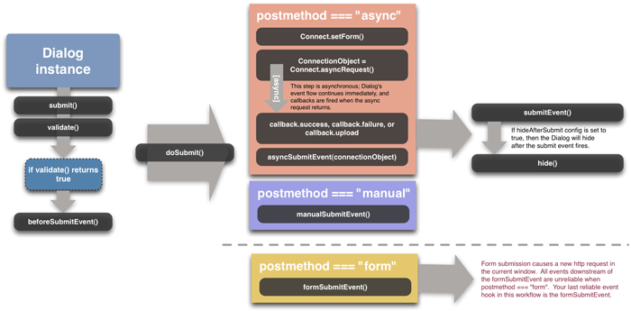

YUI 2: Dialog
YUI 2: Dialog
The Dialog component is an extension of Panel that is meant to emulate the behavior of an dialog window using a floating, draggable HTML element. Dialog provides an interface for easily gathering information from the user without leaving the underlying page context. The information is collected via a standard HTML form; Dialog supports the submission of form data either through an XMLHttpRequest, through a normal form submission, or through a fully script-based response (where the script reads and responds to the form values and the form is never actually submitted via HTTP to a server).
Quick Links:
- Examples: Explore examples of the Dialog Control in action.
- API Documentation: View the full API documentation for the Dialog Control.
- Release Notes: Detailed change log for the Dialog Control.
- License: The YUI Library is issued under a BSD license.
- Download: Download the Dialog Control as part of the full YUI Library at YUILibrary.com.
Getting Started
To use Dialog, include the following code in your page:
<!-- Sam Skin CSS --> <link rel="stylesheet" type="text/css" href="http://yui.yahooapis.com/2.9.0/build/container/assets/skins/sam/container.css"> <!-- OPTIONAL: You only need the YUI Button CSS if you're including YUI Button, mentioned below. --> <link rel="stylesheet" type="text/css" href="http://yui.yahooapis.com/2.9.0/build/button/assets/skins/sam/button.css"> <!-- Dependencies --> <script src="http://yui.yahooapis.com/2.9.0/build/yahoo-dom-event/yahoo-dom-event.js"></script> <!-- OPTIONAL: Animation (only required if using ContainerEffect) --> <script src="http://yui.yahooapis.com/2.9.0/build/animation/animation-min.js"></script> <!-- OPTIONAL: Connection (only required if using asynchronous form submission) --> <script src="http://yui.yahooapis.com/2.9.0/build/connection/connection-min.js"></script> <!-- OPTIONAL: Drag & Drop (only required if enabling Drag & Drop) --> <script src="http://yui.yahooapis.com/2.9.0/build/dragdrop/dragdrop-min.js"></script> <!-- OPTIONAL: YUI Button (these 2 files only required if you want Dialog to use YUI Buttons, instead of HTML Buttons) --> <script src="http://yui.yahooapis.com/2.9.0/build/element/element-min.js"></script> <script src="http://yui.yahooapis.com/2.9.0/build/button/button-min.js"></script> <!-- Source file --> <script src="http://yui.yahooapis.com/2.9.0/build/container/container-min.js"></script>
yui-skin-sam class name to an element that is a parent of the element
in which the Dialog Control lives. You can usually accomplish this simply by putting the class on the
<body> tag:
<body class="yui-skin-sam">
For more information on skinning YUI components and making use of default skins, see our Understanding YUI Skins article here on the website.

YUI Dependency Configurator:
Instead of copying and pasting the filepaths above, try letting the YUI dependency Configurator determine the optimal file list for your desired components; the Configurator uses YUI Loader to write out the full HTML for including the precise files you need for your implementation.
Note: If you wish to include this component via the YUI Loader, its module name is container. (Click here for the full list of module names for YUI Loader.)
Where these files come from: The files included using the text above will be served from Yahoo! servers; see "Serving YUI Files from Yahoo!" for important information about this service. JavaScript files are minified, meaning that comments and white space have been removed to make them more efficient to download. To use the full, commented versions or the -debug versions of YUI JavaScript files, please download the library distribution and host the files on your own server.
Order matters: As is the case generally with JavaScript and CSS, order matters; these files should be included in the order specified above. If you include files in the wrong order, errors may result.
Using Dialog
This section describes common tasks for creating and using Dialog. It contains these sections:
- Defining Dialog Markup
- Setting up Dialog Buttons and Callbacks
- Initializing the Dialog
- Submitting Form Data
- Reading Current Form Data
- Configuration Properties
- Dialog Event Flow (diagram)
Dialog inherits its constructor and configuration, as well as several other important methods, from Panel, and thus from Overlay. See Panel and Overlay for more information on how to utilize Dialog's inherited features.
Defining Dialog Markup
HTML markup for Dialog uses the same modular format underlying Module. Because the core interaction supported by Dialog involves gathering information from the user via an HTML form, typically you place a form element in the "body" section of your Dialog module. Placing the form element in the page, rather than creating the form via script once the Dialog instance is created, enables you to use Progressive Enhancement — showing the full content and functionality to users who may have older browsers or who have JavaScript disabled while still providing a richer interaction to modern, standards-compatible browsers.
The following example illustrates the markup for a Dialog module:
<div id="myDialog"> <div class="hd">Please enter your information</div> <div class="bd"> <form name="dlgForm" method="POST" action="php/post.php"> <p>Please enter your personal contact information:</p> <label for="firstname">First Name:</label><input type="text" name="firstname" /> <label for="lastname">Last Name:</label><input type="text" name="lastname" /> </form> </div> </div>
The "action" attribute specified in the form is the one that is used to submit
the data, regardless of whether you have configured your Dialog (via the postmethod attribute)
to use XMLHttpRequest or standard form submission.
If no form is specified in your markup, one is automatically created for you by Dialog (its name attribute will be "frm_dialogid", where dialogid is the HTML element id you passed to the Dialog constructor). If you allow Dialog to create the form for you dynamically, be sure to set the form's action attribute by script if you wish the form to post via XMLHttpRequest or standard form submisison.
Setting up Dialog Buttons
Dialog provides a configuration property called "buttons" that allows you to automatically wire up buttons with callbacks to display in the footer of the Dialog. Buttons are configured by creating an array of objects as illustrated in the following code sample. Note that you can configure a separate handler script to respond to each of the buttons.
var handleCancel = function() { this.cancel(); }; var handleSubmit = function() { this.submit(); }; var myButtons = [ { text: "Submit", handler: handleSubmit, isDefault: true }, { text: "Cancel", handler: handleCancel } ]; myDialog.cfg.queueProperty("buttons", myButtons);
Each button object in the buttons array can have three properties:
- text: The text that will display on the face of the button;
- handler: the function that should fire when the button is clicked (the scope of this function is always its Dialog instance);
- isDefault: an optional boolean value that specifies that a button should be highlighted and focused by default.
In the example above, the "buttons" property is queued up to be executed upon render of the Dialog.
NOTE: If you've included the optional YUI Button script on the page, the buttons created will be instances of YAHOO.widget.Button otherwise regular HTML Buttons will be created.
Initializing the Dialog
To instantiate a Dialog, use this code:
var myDialog = new YAHOO.widget.Dialog('myDialog');
This constructor uses an element with an HTML ID of "myDialog" on the page; the markup example above provides a template for this markup. Once instantiated, you may wish to configure the form's buttons (see above) and then render your Dialog instance on the page:
myDialog.render();
Generally, Dialogs are hidden when the page loads and only appear when needed. To reveal your Dialog on screen, invoke its show method:
myDialog.show();
Submitting Form Data
Submitting the Dialog via script is as simple as calling the submit function on the Dialog object:
myDialog.submit();
The default postmethod for the Dialog is async. Upon submission of a Dialog whose postmethod configuration is set to async (meaning that it will use Connection Manager to post the form's data via XMLHttpRequest to the URI specified in the form element's action attribute), all of the appropriate Connection Manager callbacks documented in the API will be executed, allowing for easy handling of the response.
By default the Dialog is automatically hidden after submission, however the hideaftersubmit configuration property can be used to control this behavior.
For example, to set up the handlers for both successful and failing Dialog submissions when using an asynchronous form post, the code might look like this:
var onSuccess = function(o) { alert("Your data was successfully submitted. The response was: " + o.responseText); }; var onFailure = function(o) { alert("Your submission failed. Status: " + o.status); }; myDialog.callback.success = onSuccess; myDialog.callback.failure = onFailure;
When using the async postmethod, if you need access to the connection object, you can listen for the asyncSubmitEvent, which is fired after the async request is dispatched. The connection object will be passed to listeners as the first argument:
myDialog.asyncSubmitEvent.subscribe( function(type, args) { var connectionObject = args[0]; setTimeout(function() { if (userClosedDialog) { YAHOO.util.Connect.abort(connectionObject); } }, 1000); } );
If the Dialog's form contains a file upload input control (<input type="file">) the Dialog will use Connection Manager's file upload support when sending
out the async request. For file uploads Connection Manager expects the callback to be defined with a single upload handler, replacing the success and failure handlers.
The upload handler will be invoked on completion of the transaction:
var onUpload = function(o) { // NOTE: In this case, since Connection Manager uses an iframe for submission, // o.responseText will contain the contents of the iframe's document.body tag as a string. // See the Connection Manager documentation for more details alert("Your data was successfully submitted. The response was: " + o.responseText); } myDialog.callback.upload = onUpload;
It's also valuable to note that the callback object referenced in the above example is passed directly to the Connection Manager, and therefore can accept the argument and scope properties in addition to success and failure. More information on the usage of these properties is available in the Connection Manager documentation.
Reading Current Form Data
Dialog provides a function called getData that returns a simple object structure with the form's current data. For instance, in the example above, if you wanted to find out what someone typed in the field called "firstname" you could retrieve that value from getData like such:
var firstname = myDialog.getData().firstname;
Configuration Properties
Dialog has the following configuration properties:
| Name | Type | Default | Description |
|---|---|---|---|
| postmethod | String | "async" | The method in which the Dialog's form should be posted. Options are "async", "form", or "none". |
| postdata | String | null | Additional post data to send along with "async" POST requests. This string is expected to be the form of a name/value pair query string, as defined by the YAHOO.util.Connect.asyncRequest method. |
| buttons | Object[] | null | Array of button objects to render at the bottom of the Dialog. |
| hideaftersubmit | Boolean | true | Whether or not to hide the Dialog after it is submitted. |
Dialog has the following inherited configuration properties:
| Name | Type | Default | Description |
|---|---|---|---|
| visible | Boolean | true | Sets whether or not the Dialog is visible on the page (Dialog uses the CSS "visibility" property to control this). |
| effect | Object / Object[] | none | Sets the ContainerEffect (one or many) that should be used when showing and hiding the Dialog. |
| monitorresize | Boolean | true | Configures whether or not to create a hidden off-screen element that can be used to monitor for text size changes in the DOM. |
| x | Number | null | Sets the element's page X co-ordinate. |
| y | Number | null | Sets the element's page Y co-ordinate. |
| xy | Array | null | Sets the element's page XY co-ordinates. |
| context | Array | null |
Allows the Overlay to be aligned relative to a context element. The property expects an array value with the format: [contextElementOrId, overlayCorner, contextElementCorner],
where "contextElementOrId" is the context element or the id of the context element.
The corner parameters are one of the following string values: "tr" (top right), "tl" (top left), "br" (bottom right), or "bl" (bottom left) and define which corners of the overlay and context element should be aligned. The array also supports optional 4th and 5th entries. The 4th entry is an optional array of event names, or Custom Event objects, which should trigger re-alignment of the Overlay with the currently configured context element. For example:
Will re-align the Overlay to the context element just before it's shown, and whenever the window is resized. The 5th entry is an optional XY pixel offset, which is to be applied after the Overlay is aligned to the specified corner of the context element, and can be used to add a pixel buffer between the context element and the Overlay. For example:
Will offset the Overlay by 10 pixels along the X axis, and 20 pixels along the Y axis, after aligning the specified corners. |
| fixedcenter | Boolean | false | Specifies whether the Overlay should be automatically centered in the viewport on window scroll and resize. |
| width | String | null | Sets the element's "width" style property. |
| height | String | null | Sets the element's "height" style property. |
| zIndex | Number | null | Sets the element's "z-index" style property. |
| constraintoviewport | Boolean | false | If set to true the Overlay will try to remain inside the confines of the size of viewport. |
| iframe | Boolean | false (true by default for IE 6 and below) | If set to true the Menu will have and iframe behind it to prevent other elements with a higher z-index from poking through. |
| close | Boolean | null | Whether a "close" icon should be displayed in the header. |
| draggable | Boolean | "true" if the Drag and Drop utility is included, otherwise "false." | Whether to allow the user to drag the Panel using its header. |
| underlay | String | "shadow" | Specifies the type of underlay to display under the Panel. Other options include "none", and "matte", which renders a small white matte under the Panel. |
| modal | Boolean | false | Specifies whether the document should be shielded with a partially transparent mask to require the user to close the Panel before being able to activate any elements in the document. |
| keylisteners | YAHOO.util.KeyListener / Array | null | A KeyListener or Array of KeyListeners containing key events to enable when the Panel is displayed. |
| hideaftersubmit | Boolean | true | If set to true, the Dialog is hidden after it's submitted. If false, it is left visible after form submission. |
| autofillheight | String | "body" | Which container element (header, body or footer) should be sized to fill out any remaining
vertical space when a height is set on the container using the height configuration property. Supported values are "header", "body" and "footer". Can be set to null (or false) to turn off the feature.
|
Dialog Event Flow (diagram)

Support & Community
The YUI Library and related topics are discussed on the on the YUILibrary.com forums.
Also be sure to check out YUIBlog for updates and articles about the YUI Library written by the library's developers.
Filing Bugs & Feature Requests
The YUI Library's public bug tracking and feature request repositories are located on the YUILibrary.com site. Before filing new feature requests or bug reports, please review our reporting guidelines.

Container Family Examples:
- The Module Control
- Creating and Positioning an Overlay
- Simple Tooltip Example
- One Tooltip, Many Context Elements
- Simple Panel Example
- Skinning a Panel with Custom CSS: Introduction
- Skinning a Panel with Custom CSS: Advanced
- Creating a Modal "Loading" Panel
- Creating a Resizable Panel
- Dialog Quickstart Example
- SimpleDialog Quickstart Example
- Using ContainerEffect Transitions
- Using the Overlay Manager to Manage Multiple Panels
- Implementing Container Keyboard Shortcuts with KeyListener
- Using the Container ARIA Plugin
Other YUI Examples That Make Use of the Container Family:
- Using the Button ARIA Plugin (included with examples for the Button Control)
- Using A Menu Button To Replace A <select> Element (included with examples for the Button Control)
- Replacing the content of a Button's Menu (included with examples for the Button Control)
- Example of Color Picker Built in a Dialog via JavaScript (included with examples for the Color Picker Control)
- Layout inside a resizable Panel (included with examples for the Layout Manager)
- Editor in a Dialog Control (included with examples for the Rich Text Editor)
- Menu Buttons (included with examples for the Button Control)
- Popup Calendar - Advanced (included with examples for the Calendar Control)
- Showing, Hiding, and Reordering Columns. (included with examples for the DataTable Control)
- Split Buttons (included with examples for the Button Control)
- Simple Calendar Menu Button (included with examples for the Button Control)
- Calendar Menu Button with Date on Button Face (included with examples for the Button Control)
- Color Picker Button (included with examples for the Button Control)
- Fixed Width Menu Button (included with examples for the Button Control)
- OS-Style Programs Menu (included with examples for the Menu Family)
- Application Menubar (included with examples for the Menu Family)
- Slider Button (included with examples for the Button Control)
- Complex Application (included with examples for the Layout Manager)
More Reading about the YUI Dialog Control:
- Creating Lightbox with Yahoo! User Interface Library, at TheCodeCentral
- YUI - Part III - The mighty dialog, by David Baxter on the CreativeUI blog
YUI Dialog on del.icio.us:
be the first to bookmark this page!
All YUI 2.x users should review the YUI 2.8.2 security bulletin, which discusses a vulnerability present in YUI 2.4.0-2.8.1.
- YUI Library
- YUI Home
- YUI 3
- YUIBlog
- Bug Reports/Feature Requests
- YUI on GitHub
- YUI License
- YUI 2.x Resources
- YUI 2 Archives
- YUI 2 Examples
- YUI 2 API Docs
- YUI 2 Discussion Forums

- YUI Components
- Animation
- AutoComplete
- Browser History Manager
- Button
- Calendar
- Carousel
- Charts
- Color Picker
- Connection Manager
- Container
- Cookie
- DataSource
- DataTable
- Dom
- Drag & Drop
- Element
- Event
- Get
- ImageCropper
- ImageLoader
- JSON
- Layout Manager
- Logger
- Menu
- Paginator
- Profiler
- ProfilerViewer
- ProgressBar
- Resize
- Rich Text Editor
- Selector
- Slider
- Storage
- StyleSheet
- SWF
- SWFStore
- TabView
- TreeView
- Uploader
- Yahoo Global Object
- YUI Loader
- YUI Test
- Reset CSS
- Base CSS
- Fonts CSS
- Grids CSS
Copyright © 2013 Yahoo! Inc. All rights reserved.